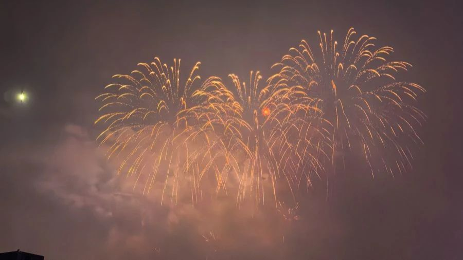
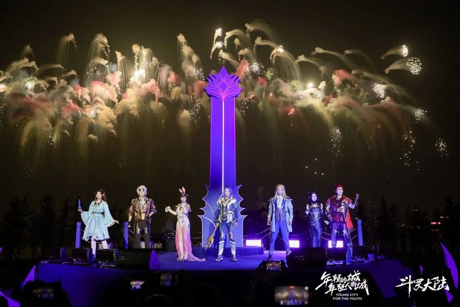

明天周六。
晚上八点，滴水湖上空，20分钟的无人机和烟花准时开场。不要门票，不用预约，地铁16号线坐到底就能到。
这篇文章，把怎么看、去哪看、看完去哪吃都替你打听好了。

「临港时刻·时光之戒」光影烟花秀资料图 来源：临港新片区管委会官网
「临港时刻·时光之戒」光影烟花秀
时间：每周六 20:00
地点：滴水湖环湖景观带
费用：免费，无需预约
提醒：遇大风大雨可能临时调整，出发前看一眼「上海临港」「Hi临港」公众号通知
1
这场秀，今年加了新料
先说最关心的：不要钱，这是临港新片区常态化的免费演出。
从2025年起，每周六晚八点，滴水湖准时放一场。今年又升级了——无人机编队和烟花正式「合体」，14分钟无人机表演打头阵，6分钟烟花收尾，整整20分钟。
而且每期主题都在换。国庆那场，烟花是照着十二月令花卉和花语设计的，十月开桂花，图案就不一样。周周有新花样，看一次上头一次。
同一段湖岸，白天是产业新城的节奏，晚上八点切换成浪漫模式。这份「反差感」，就是临港最好玩的地方。
2
去哪看：环湖一圈都是位置
环湖一圈全是观赏位，不用挤在一个点上。
想舒服的，去北岛草坪，铺块野餐垫躺着看。想出片的，去东岸桥上，烟花和湖面倒影一起收进画面。想省事的，直接在庆典广场附近站定，正对燃放点。
提醒一句：好位置靠抢。五一假期那场，据媒体报道，有人提前四个小时就去占位了。明晚想去的话，晚饭可以早点解决。

烟花在滴水湖畔上空绽放资料图 来源：临港新片区管委会官网
3
这几件事，提前知道
交通：地铁16号线滴水湖站下车，出站就是环湖。自驾的话，环湖停车位周末紧张，赶早不赶晚。
禁飞：演出当天17:00至20:30，环湖一路围合区域（含湖面）对无人机等「低慢小」航空器临时管控。自己带无人机去拍，是会被依法处罚的。
天气：大风、大雨天演出可能临时取消，取消公告会提前发在「Hi临港」公众号，出发前刷一眼。
4
看完烟花，别急着走
环湖市集、湖畔歌会、露天电影，周六晚上都还开着。逛吃逛吃，慢慢消化那20分钟的心动。
白天顺道来的，玩法更多。国庆假期那场滴水湖美食生活节，开幕首日客流就有1.9万人次；周边上海天文馆、航海博物馆、海昌海洋公园、耀雪冰雪世界，随便挑一个都能玩上大半天。
这座湖，白天其实也很忙。就在10月底，2026上海国际再保险会议在湖畔的新辰国际会议中心开——39个国家和地区、430家行业机构、1553位行业人士到场，规模创历史新高。
白天装下全球的保单，晚上放得下一湖烟花。
这大概就是「年轻的城」
最直白的样子
2026上海国际再保险会议发布仪式（10月28日，滴水湖畔） 来源：临港新片区管委会官网
你有多久没看过烟花了？
明晚八点，去湖边站一站。风大，记得多穿一件。
评论区聊聊：你最想和谁一起看这场烟花？